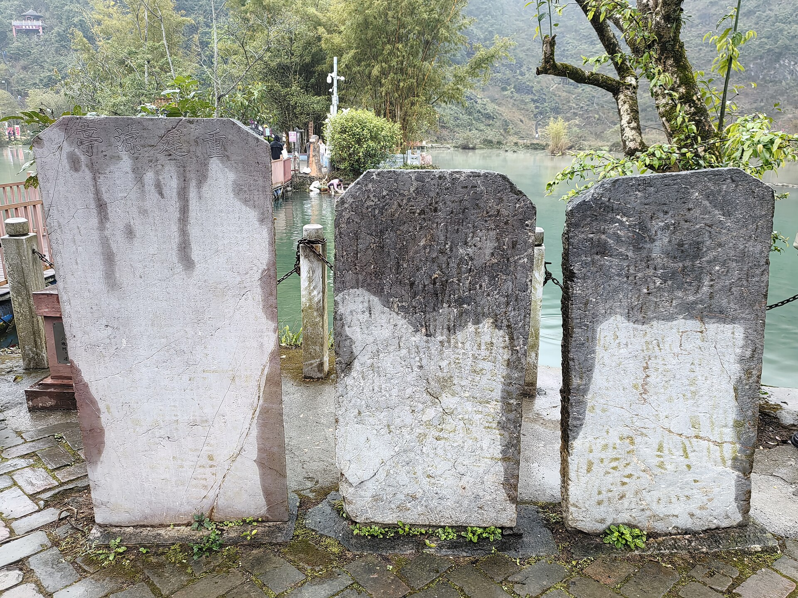

百色·浩坤湖·靖西·南宁：六天五晚，铁路往返，当地打车游
建议日期：2026年10月1—6日；10月7日留在家休息。同行3人：2成人、1名8岁儿童；每晚1间房，共5间夜。 10月1日D3782广州南→百色已经购买；靖西→南宁及南宁东→广州南车票、酒店均未预订。路线与返程方案复核于9月21日；国庆房价、房型库存和指定日期列车仍须在预订时更新，所有未成交金额仍是估算。
主线依次游浩坤湖、渠洋湖、鹅泉。当地打车为主，跨城和乡村接送提前预约；D2不退房，D3带行李游湖后住靖西，D5优先铁路、无可购票面则公路直达南宁，D6从南宁东动车返粤。住宿每晚一间房。

六天安排，一眼看懂
| 日期 |
当天安排 |
住宿 |
| 10/1 周四 |
南城→西平西→番禺/广州南→百色，到店休息 |
百色，一间房 |
| 10/2 周五 |
08时出发浩坤湖，15时回程，约17时回百色 |
百色，同一酒店 |
| 10/3 周六 |
08:30退房出发，渠洋湖午餐及游览，约17时到靖西 |
靖西，一间房 |
| 10/4 周日 |
鹅泉慢游，午餐后约14:30回酒店 |
靖西，同一酒店 |
| 10/5 周一 |
靖西转场到南宁；铁路票面确认后执行，否则10:00左右公路直达 |
南宁东站南广场，一间房 |
| 10/6 周二 |
南宁东→广州南/番禺→西平西→南城 |
回家，无第6晚 |
D1长途时刻按已购D3782执行，其余时刻为规划目标，不是票面。国庆为10月1—7日，10月7日留在家休息；D5先到南宁住一晚，避免D6当天从靖西走长距离公路再追返粤动车。假期通知。
下载与使用
下载完整离线攻略 PDF。网页适合查导航与来源；每日PDF适合保存在手机里，出门只看当天。费用表中的金额均按全家3人计算，住宿明确按1间房计算；单人票价会另行标注。
为什么这样组合
三个山水景点各占一天：浩坤湖从百色往返，渠洋湖放在转往靖西的当天，鹅泉从靖西往返。D2行李留百色酒店，D3行李随车；D4回靖西午休，D5只做靖西→南宁转场。这样取消靖西→百色的回头路，并把D6动车压缩到约3.5小时。
公开国庆游记有鹅泉进村拥堵经历，因此保留早上出发和往返预约。它是历史个案，不代表2026年必然堵车。游客经历。
铁路方案：去程已购，靖西转南宁后返粤
10月1日D3782广州南→百色已经购买，09:43发车、14:53抵达。 同行人数按本行程3人执行；席别和实付金额没有提供。D5铁路仅在12306显示10月5日可购票面后启用，否则改公路直达；D6计划从南宁东动车到广州南，9月22日以12306实际开行车次选票。
| 方向与日期 |
优先级／车次 |
乘车区间 |
时刻与耗时 |
状态／成人参考 |
| 去程10/1 |
D3782 |
广州南→百色 |
09:43→14:53，5小时10分 |
已购；金额以私人订单为准 |
| 转场10/5 |
铁路条件方案 |
靖西→南宁／南宁东 |
只按12306订单票面执行 |
当前商业缓存冲突；9/22 12:00仍无结果则改公路 |
| 转场10/5 |
公路兜底 |
靖西酒店→南宁东站南广场酒店 |
10:00左右出发，按4.5—5.5小时门到门 |
约276公里；需书面询价并核验车辆 |
| 返程10/6 |
南宁东动车 |
南宁东→广州南 |
目标上午出发 |
9/22 15:15按12306实际车次购票 |
| 返程10/6 |
备选D3617／D3621 |
南宁东→广州南 |
约08:55→12:30／10:45→14:08 |
待购；约208元起参考 |
去程“已购”来自用户确认，共享网页不记录订单号、乘车人证件、席位或支付信息。D5商业页面近期仍能看到K9304、K9306、K9308等车次，但K9306时刻出现多种冲突版本，本次12306查询又未返回10月5日可购票面，所以所有车次名只作检索线索。D6同样只以9月22日12306订单页为准；南宁站与南宁东站不可混用。D3782停站、靖西—南宁查询、南宁东—广州车次。
车票行动日历
| 车票 |
时间 |
操作 |
| 10/1 D3782广州南→百色 |
已购 |
9月30日在私人订单核对日期、车次、三位实际乘车人、席别和检票信息；不重复下单 |
| 10/5靖西→南宁，3张有座票 |
9月22日12:00前完成复核 |
只选12306实际显示、白天到达且三人有座的方案；无结果即启动公路兜底 |
| 10/6南宁东→广州南，3张二等座 |
9月22日15:15 |
15:00登录、15:10复核；按实际开行的上午车次排序 |
日期按通常15天预售期推算；南宁站、南宁东站自2025年6月公开调整为15:15起售，开售前仍须在12306按日期和出发站复核。靖西站的准确起售分钟当前未从官方查询结果取得，不能套用百色站旧时间。南宁站起售调整、官方起售查询。
无票时只选择全家能接受的车次候补；三人一起提交，不让孩子单独候补。D5铁路在内部截止前没有形成可执行订单就改公路，不把当天抵达南宁押在未确认候补上；D6可对实际开行的上午车次一并候补。完成预付款后候补才生效。本计划没有代登录、提交候补、付款或创建提醒。12306候补规则。
三人铁路预算怎么算
| 项目 |
计算方式 |
三人合计 |
| 长途去程 |
2×337.50＋儿童约169 |
约844元 |
| 靖西→南宁普速 |
成人硬座约43.5元，儿童由系统计算 |
约110—140元 |
| 南宁东→广州南 |
成人二等座约208—238元，儿童由系统计算 |
约520—650元 |
| 西平西↔番禺两次城际 |
三人每程预留80—100元 |
160—200元 |
| 参考合计 |
去程原预算844＋其余三段 |
约1,634—1,834元 |
| 正式预算预留 |
包含票价变化与取整余量 |
1,900—2,200元 |
儿童优惠票最终由12306按规则计算，表内儿童份额只是预算，不是已查得票价。儿童票规则。城际未核实本次日期现价，所以按三人80—100元／程预留。南城、靖西、南宁接送站另在出租车预算中，餐饮另列。若D5成功购买铁路，全程仍按9,200—14,600元；若启用靖西→南宁公路直达，建议总预留提高到9,200—15,900元，含每晚一间房及备用金。
西平西城际怎样接上主选
去程按06:00左右南城出门、06:30前后到西平西规划，实际地址未知，应按门到站车程调整。选择最晚08:00抵达番禺的当日可乘城际，给D3782发车前留103分钟转站、安检和早餐余量；不要押注“最快25分钟”的极限衔接。若9月30日查不到满足08:00前到达的合适城际，直接预约车送广州南并预留国庆拥堵余量。
城际快慢车、当日票与公交化乘车方式和长途固定席位不同；本次没有核实10/1指定C字头班次，因此不编造车次号。9/30按官方实际班次挑满足到达截止的列车，儿童建议由监护人在12306购买儿童优惠票，进站按所购票种选择通道；不要以成人扫码能进站推断孩子也能直接扫码。参考广州政府城际乘车指南，历史指南需结合当天规则使用。
返程D3619约12:47到广州南后，预留45—60分钟出站、午餐或转番禺，预计15:00—15:45回到南城。后三段为接驳预算，不是固定时刻。改D3621时到家约后移1小时20分；不要采用平台给出的15—20分钟广州南极限换乘。
当地打车：哪些随叫，哪些提前约
| 场景 |
执行方式 |
出发前必须落实 |
| 百色站、城区酒店和餐馆 |
正规出租车或平台叫车，预留15—30分钟候车 |
正式上客点、行李容量 |
| D2百色↔浩坤湖 |
往返预约两单，或同一合规接送方明确往返等候 |
正式入口、景交换乘、15时接回、等待费 |
| D3百色→渠洋湖→靖西 |
一程约定湖区停留，或两程预约都确认 |
约3小时游览午餐、行李保管、15时离湖 |
| D4靖西↔鹅泉 |
两程提前预约 |
正式入口与13:30回程点 |
| D5靖西酒店→靖西站 |
前晚预约城区车 |
票面发车前60分钟到站、行李容量 |
| D5南宁站→南宁东片区酒店 |
到站后正规平台叫车 |
区分南宁站与南宁东站，晚高峰留弹性 |
| D6南宁酒店→南宁东站 |
前晚预约短程送站 |
发车前75—90分钟到站、进站口 |
“打车”为主不等于偏远湖区能随叫随走；无需租车，但跨城及乡村必须预约。报价看含高速费、停车、等待与返空的总价，保留正规订单。普通五座车载司机＋3名乘客，人数可容纳；箱子仍需提前说明。按儿童身高和产品要求配置合适安全约束，预订时询问是否有适配儿童座椅或增高垫，不假定车辆自带。
可复制的询价文字：“我们2成人、1名8岁儿童，共3位乘客，行李为实际箱数。10月3日百色酒店出发，11:30左右到渠洋湖正式接待点，午餐和游览约3小时，15时离湖去靖西酒店。请报含高速、停车、等待和返空的总价，确认车型、行李保管、合法上客点及取消规则。”攻略没有替你发送信息。
全程道路用车预留
| 项目 |
全家预算 |
| 南城↔西平西两次 |
60—140元 |
| 百色站接站及城区短途 |
120—240元 |
| 浩坤湖当日往返 |
600—1,000元 |
| 百色→渠洋湖停留→靖西 |
800—1,200元 |
| 靖西↔鹅泉 |
180—300元 |
| 靖西送站、南宁两次接送站 |
100—220元 |
| 靖西、南宁市内及调度余量 |
100—240元 |
| 合计 |
2,100—3,500元 |
以上全为询价占位，不是运价表或已确认报价；三人乘一车与三人乘一车不应机械打七五折。报价超区间时更新预算、比较正规车辆，不默认删掉已经选定的湖区。
住宿：位置和休息条件先于星级
建议百色选择龙景/万景城一带，靖西在锦绣古镇、幸福路和银山颐园三处比较，南宁最后一晚优先南宁东站南广场。10/1—3百色2晚、10/3—5靖西2晚、10/5—6南宁1晚。连续入住段只选一家，不要每天换酒店。
| 城市与候选 |
为什么放进清单 |
下单前特别核对 |
| 百色首选：梦之源大酒店（万景城不夜街店） |
4.8分、评论量大；餐饮、洗衣和亲子用品线索完整，适合D1落地和D2早出发 |
所有房型不可加床；必须选家庭房或明确允许三人的双床房。要求非临街、远离娱乐楼层；早餐成人38元，儿童按身高收费 |
| 百色舒适备选：百色温德姆度假酒店 |
房间与亲子设施更适合休息，有室内泳池及儿童池线索 |
确认是否主楼、到电梯距离和三人早餐；成人早餐68元，儿童按身高档；位置和价格通常不如城区候选轻便 |
| 百色经济备选：城市便捷（森林中心城恒基广场店） |
公开页面可见亲子双床房，预算压力较小，周边用餐方便 |
核实亲子房床宽、2成人1儿童入住政策、无烟安静朝向、早餐和国庆库存 |
| 靖西首选：柏曼酒店（锦绣古镇店） |
2024年开业、可见家庭房；近期点评多提到干净、洗衣和周边吃饭方便 |
古镇对面夜间可能有音乐，要求背街高层安静房；入住先核三套用品和卫生，早餐不要默认含3份 |
| 靖西位置备选：维也纳国际（幸福路店） |
幸福路城区餐饮和超市方便，去鹅泉叫车清晰 |
近期点评对烟味、隔音、窗帘、Wi-Fi及早餐有分歧；要求无烟无异味、安静朝向，并确认早餐是否值得预付 |
| 靖西经济备选：雅斯特美途（银山颐园店） |
页面可见家庭房、洗衣和较大房间线索，可作为前两家无合适房型时的备份 |
当前有效点评证据较少，需重新核实房况、叫车位置、早餐、国庆库存与取消期限 |
| 南宁距离首选：途泊酒店（南宁火车东站南广场店） |
位于南广场负一楼出站层，平台标注距南宁东站约10米 |
确认次晨开放通道、有窗无烟房、三人入住、床宽、早餐与国庆退改 |
| 南宁连锁首选：城市便捷（南宁东站南广场店） |
平台标注东站约540米、地铁站约380米，2026年近站评价较多 |
确认3号楼入口、电梯、实际拖箱路线、家庭房或三人双床房 |
| 南宁家庭房备选：吉瑞酒店（南宁火车东站南广场店） |
平台标注东站约640米，有三床家庭入住评论线索 |
确认三人房型真实库存、早餐、隔音和南广场步行入口 |
10月1、2日晚从百色三家中选同一家；10月3、4日晚从靖西三家中选同一家；10月5日晚从南宁东站南广场三家中选一家。以上均未核实国庆库存，不以默认日期价格充当10月报价。梦之源、百色温德姆、城市便捷百色店、柏曼锦绣古镇、靖西幸福路维也纳、雅斯特美途、途泊南广场店、城市便捷南广场店、吉瑞南广场店。
每晚一间可接待2成人＋1名8岁儿童的房间，优先询问家庭房或床宽合适的双床房，不默认普通大床房可舒适住三人。下单前核对允许入住人数、每张床宽、是否需加床及费用、儿童早餐、无烟与浴室防滑。按每晚450—800元暂留，5间夜共2,250—4,000元；家庭房或加床实际价格可能更高，以国庆报价更新，不设硬上限。
梦之源平台早餐参考07:30—10:00，成人38元；幸福路维也纳参考07:00—10:00，成人38元；温德姆参考07:00—10:00，成人68元。儿童收费按酒店身高档，8岁不自动免费。订一房先核对订单究竟含几份早餐，早餐不含部分放入餐饮预算，避免重复算。10/6若早车，前晚询问能否打包早餐。
门票、预约与年龄优惠
| 项目 |
本家处理 |
出发前核对 |
| 浩坤湖 |
2成人＋儿童分别查票种，门票、景交、游船逐项问 |
平台停船公告与8月媒体运营消息不一致；按最新景区答复执行 |
| 渠洋湖 |
岸边接待条件先确认，游船可选 |
实际航线、时长、遮阳、儿童救生衣、末班及三人总价 |
| 鹅泉 |
只查鹅泉使用日票种，不买其他景区组合 |
儿童按实际年龄／身高规则，竹筏是否另外收费 |
所有景区优惠均不能直接套用铁路儿童规则，8岁不代表所有景点免费。全程门票体验预留400—900元，包括门票、景交及酌情选一次正规水上体验；不是两湖游船和鹅泉竹筏全部打包报价，若都参加需另行合计。
浩坤湖平台信息、渠洋湖、鹅泉。
三人全家预算
| 类别 |
六天五晚预留 |
计算口径 |
| 铁路与城际 |
1,900—2,200元 |
2成人＋1儿童往返二等座，含广东城际 |
| 住宿 |
2,250—4,000元 |
5晚×1房＝5间夜；三人同住一间 |
| 餐饮 |
1,400—2,200元 |
6天热饭与特色小吃，已含早餐不重复 |
| 出租车与预约接送 |
2,100—3,500元 |
含两湖接送、鹅泉、三城接送站及短途 |
| 门票与体验 |
400—900元 |
门票、景交及酌情一次正规水上体验 |
| 水零食用品 |
150—300元 |
不与正餐重复 |
| 备用金 |
1,000—1,500元 |
调车、改期和价差，并非必然支出 |
| 合计 |
9,200—14,600元 |
三人总额，含备用金；D3782实付金额未写入 |
没有固定预算上限；以上为了询价比较，不是实际成交价。儿童票、早餐规则、酒店库存和跨城报价确认后再更新。路线固定为六天，不另加第七天景点。
看完社区经验，哪些值得保留
- 浩坤湖网红山顶视角与湖岸线不同，按正式入口和孩子体力走短线；狭窄山路、不明免费入口不作为导航目标。
- 渠洋湖游船评价分歧较大，先确认遮阳、航线和候船时间；喜欢安静观景可以坐，孩子不愿坐则岸边走走。
- 鹅泉先辨明门票与竹筏票，不为无人桥面久等，不把春季花海当十月景色。
- 湖区回城车辆提前落实，历史“有人顺路带回”不能证明国庆运力。
- 餐馆评论少或年代旧时，只留作候选；到店先问营业、出菜和份量，三人从两菜一汤或三菜起点，不照搬多人团餐。
以上为本家规划取舍。可见公开评论与游记均注明来源。9月17日尝试小红书网页端景点搜索，但搜索结果被登录弹窗遮挡，因此只在各景点页提供站内搜索入口，没有把不可见笔记当成已核验经验，也没有转载无许可照片。英文社区样本另在Day 2—4逐条说明；Trip.com自动翻译内容与原始中文内容不视作两个独立样本。
行前复查与随身清单
去程D3782已购：9月30日在私人订单核对车次、三位乘车人与席位。现在：按百色、靖西、南宁三段各选一家可退、允许三人同住的房型。9/22 12:00前：完成D5铁路复核；仍无可购票面就预订公路直达车辆。9/22 15:15：抢10/6南宁东返程。9/28—30：复核景区、天气、三城酒店、湖区接送、鹅泉回程及两段铁路。没有创建自动提醒。
天气按出发前7天趋势、前48小时预警和当天景区公告更新。两湖与鹅泉遇雷电、强降雨、停业时取消室外活动，不自动替换成纪念馆，不压缩D5到南宁与D6返程缓冲。
随身带3人有效证件、日常药品、轻雨具、防滑鞋、防晒用品、充电宝、水、少量点心及儿童替换衣物。孩子在水边由一位成人明确照看；另一位负责订单与行李，换车重新点数三人及全部包。本人证件、订单、司机私人信息只存私人手机，不写进共享网页。
待补齐：D3782席别与实付金额（只留私人记录）、D5最终交通确认单与D6指定日期票面、一间房房型与退改、儿童身高及景区票种、每程司机确认和集合点。紧急求助120／110，普通出行问题先找景区服务台、酒店或平台。
经验信息怎么用
本攻略结合官方线路、运营公告、OTA景区和酒店页面、公开游记与可见评论，形成上述安排；没有登录小红书或抖音账号，也没有把搜索摘要当作完整视频体验。旧无车游记能提示接驳问题，旧票价与班次不沿用。渠洋湖船务评论有好有坏，不能由少数样本推断所有经营者；酒店个别潮味、排队评论只变成订房核对项。详细来源和适用日期保存在研究记录中，平台促销、错地名“鸡西”、野路逃票及“广州南到靖西只需3小时”等不可靠内容均不进入执行路线。
每日行程
D1 · 10月1日 周四｜东莞南城到百色
今天只完成顺利到店。 D3782广州南09:43→百色14:53已经购买，按本行程3人执行；席别与实付金额以私人订单为准，不写入共享网页。住百色一间房，第1晚。步行主要在车站，约1.5—3公里估算；行李上下电梯比“景点距离”更影响疲劳。
- 1
- 出租车约20—40分钟
- 2
- 城际快慢车约30—70分钟另含候车
- 3
- 已购D3782 09:43—14:53，5小时10分
- 4
- 出租车含候车约30—60分钟
- 5
路线示意，不按地理比例；地图链接为名称检索，需确认实际入口和上下车点。时长为规划估算，不能替代票面或实时导航。
行程时间轴
| 时间 |
安排 |
移动与执行 |
| 05:30—06:00 |
早餐、最后检查 |
在家吃好；证件由一成人集中核对，儿童带好小水瓶 |
| 06:00—06:30 |
南城→西平西站 |
预约出租车；30分钟仅作南城内接驳预算，按住址重算 |
| 06:30—08:00 |
城际到番禺 |
选实际班次，预留候车和快慢车差异；目标08:00前到 |
| 08:00—09:43 |
番禺→广州南候车 |
按指示出站、步行、铁路安检；留103分钟衔接和早餐余量 |
| 09:43—14:53 |
D3782到百色 |
已购车次；午餐车上解决，轮流照顾儿童与行李 |
| 14:53—16:00 |
出站、打车、办理入住 |
先上洗手间，沿出租车指引到正规候车区 |
| 16:00—17:30 |
一间房休息 |
检查热水、卫生间、噪音；不急着出门打卡 |
| 17:30—18:30 |
酒店附近晚餐 |
有座、出菜快优先，排队超过20分钟换店 |
| 19:00—20:30 |
整理明日物品、早睡 |
如不累，只在酒店附近短走15—20分钟 |
车票与预算速查
D3782已经购买，不再查去程候补或重复下单。9月30日在私人订单核对日期、广州南站、三位实际乘车人、席别与检票信息。攻略保留的844元只是原三人预算参考，并非实付金额；城际三人预留80—100元。往返铁路与城际总预留1,900—2,200元，待补实际支付后再更新。D3782时刻、儿童票规则。
08:00是番禺目标到达时刻，距D3782发车103分钟。9月30日选择满足此条件的城际；未核实到具体C字头车次，不以“快车25分钟”倒推极限出门。若没有稳妥城际，直接预约车送广州南，并按国庆路况把出门时间继续前移。
打车与导航
出发前在地图搜“东莞西平西站”，不是“东莞西站”。城际目的地是“番禺站”，长途票出发站是“广州南站”；两者换乘不能直接当同一个站台。百色站出站后按现场出租车/网约车上客区指示，避免在车流中边走边改定位。
到百色候选酒店：梦之源大酒店（百色万景城不夜街店），龙翔路5号；若改温德姆，用订单全名替换司机目的地。普通五座车可载本家3名乘客，把箱数提前告知。当天广西接站费和南城送站费可预留60—130元，已包含全程交通总盘；站点和酒店改变需重算。
社区经验延伸：落地先把休息条件落实
旅行笔记里，小飞在2025年4月行程中遇到过酒店开窗进蚊，夜间影响睡眠；这不是本攻略候选酒店的投诉，也不能推断当地酒店普遍如此，只提醒我们抵达当天做一次简单检查。原游记。
办好一间房后，两位成人分头检查纱窗、空调、浴室和噪声，不合适当时联系前台；孩子先坐休。
晚餐先问“多久上第一道热菜、鸡鸭是否整只起卖、有没有小份”，主食和蒸蛋或豆腐先上，其余慢慢加。到店后赶夜市不是必做项目。
前台顺便问好明天早饭开放时间、出租车正规上客点、能否协助预约10/3跨城接送；对方只能帮忙询价时，就继续等明确承运确认，不把“可以帮你叫”理解成订单已落实。
当天美食
午餐（动车上，90—140元）：广州南进站前买好主食、水果和水，或上车后购买铁路正规餐食；不要用薯片、甜饮代替正餐。汤汁多、气味重、易洒的食物不带上车。14:53抵达百色，晚餐前不再用大份零食垫肚子。
晚餐首选｜壮家人·壮家菜（龙景店），160—240元。锦绣路76号，距梦之源大酒店平台标示约400米；高德导航：壮家人龙景店。平台列有宝宝椅、室内卫生间和等位区，较适合刚下车的一家三口。推荐从巴马豆腐圆／芙蓉蛋、芋头小白菜、野菜肉末汤中选两样，再配一份柠檬鸭或扣肉；柴火鸡可能份量大、等待久，先问能否半份。近期Trip.com评论提到店员会提醒菜量，属于单店有限样本。
备选1｜桂小厨广西菜（百色梦之岛店），180—260元。梦之岛购物广场4层，11:00—21:30为平台当前展示；高德导航：桂小厨梦之岛店。它进入高德百色美食榜，商场店有宝宝椅，更适合想要环境、空调和稳定座位。可点巴马黑豆腐、荔浦芋头小白菜、烤排骨或小刀鸭；老友鱼偏酸辣，孩子不吃辣就不要拿它当必点。旧评论曾提到高峰等位、热门菜售罄以及“不要香菜”仍上香菜，要求需点菜和上菜各确认一次。
备选2｜酒店餐厅／楼下热饭。若列车晚点、孩子困或两家正餐店排队超过20分钟，直接在酒店解决，预算120—200元。这是当天最稳妥的恢复方案，不再跨区追店。
小红书交叉意见：2026-07-25一篇“右江区本地菜馆排行榜”把壮家人前进店列为老牌壮家菜，但评论区多人质疑整份榜单，还指出其中一家米粉店可能已停业。本攻略因此只把同品牌、位置更顺路且商业平台信息更完整的龙景店列为候选，不采用“本地榜第一”说法。查看原帖。
看点与现场提醒
这一天的体验是从珠三角城市群进入桂西，不追求落地后再赶博物馆。长途车上可让孩子看窗外山地和平原变化，约定到站前30分钟收好平板、玩具和外套；不用安排必须完成的学习任务。长途乘坐可在安全条件下适当起身活动，靠近厕所或过道的座位需求以实际选座为准。
车站便利食品适合当午餐补充，但全家不要只吃零食。上午就备好主食、水和纸巾，避免换乘时间不足时临时分头排队。动车晚点抵达18:00以后，就在酒店或楼下吃饭，取消散步和特色餐厅。
酒店入住清单
房间优先方便到电梯，需安静而非最靠电梯门；先查看浴室是否有积水、防滑垫是否可用、空调和插座是否正常。确认早餐从几点开始、房价包含几份、儿童是否加价。百色连续住两晚，10月3日退房后带行李前往渠洋湖和靖西，此后不再返回百色住宿；入住时一次确认两晚房型，避免第二天被要求换房。
晚点、天气与删减
出发前48小时关注广东天气与铁路运行消息；大雨时提前出门，车站内换乘不依赖室外奔跑。若买到广州南更早的车，倒推至少90分钟到番禺，必要时改为虎门接高铁或直接预约车送广州南，而不是压缩到危险换乘时长。买到下午动车，D1顺延并只保晚餐休息，D2照常。
今晚确认：浩坤湖10/2开放、当天正式入口、船务与景交状态、往返两程车及15时接回时间。大行李留酒店，不退房。
依据：广东城际换乘说明、列车时刻参考、12306儿童规则。
D2 · 10月2日 周五｜浩坤湖一日，回百色住
百色酒店出发，当天回同一家酒店，不退房、不搬大行李。 2成人、1名8岁儿童，住百色第2晚、一间房。今天以正式景区的湖岸观景、廊桥和坐休为主；步行约2—4公里为可缩短的规划量，不安排猪笼洞、天门山登顶或山脊大环线。
- 1
- 预约车约1.5—2小时，实际入口待确认
- 2
- 15:00预约接回，约1.5—2小时及路况弹性
- 3
路线示意，不按地理比例；地图链接为名称检索，需确认实际入口和上下车点。时长为规划估算，不能替代票面或实时导航。
行程时间轴
| 时间 |
安排 |
移动与执行 |
| 07:15—08:00 |
酒店早餐、整理日包 |
大箱留房内；带水、点心、雨具和儿童替换上衣 |
| 08:00—10:00 |
预约车百色→浩坤湖 |
预留约1.5—2小时及国庆弹性；正式集散点由司机当天确认 |
| 10:00—10:30 |
购票、景交与洗手间 |
问清当天开放岸线、回程末班景交、船务状态 |
| 10:30—11:45 |
廊桥与核心湖岸短走 |
每走20—30分钟可停下来；不追求完整环湖 |
| 11:45—13:00 |
正式经营区午餐、坐休 |
餐馆提前问营业与出菜；不是回酒店午睡 |
| 13:00—14:15 |
湖边观景、可选正规游船 |
船停运就继续岸边短线；排队长则不坐 |
| 14:15—15:00 |
向出口返回、景交与接车 |
至少留30—45分钟找出口与候车余量 |
| 15:00—17:00 |
预约车返回百色酒店 |
不等日落；堵车先取消晚间逛街 |
| 17:00—18:00 |
回房休息 |
同一家酒店第2晚，一间房 |
| 18:00前后 |
酒店片区晚餐 |
有余力才短程去文明街吃小吃 |
打车与导航
去程和回程必须在出发前同时落实。 可在正规平台预约往返两单，或让合规接送方把往返、等待、停车与高速费写进总价。不是租车自驾，也不默认景区门口随叫随走。全家此日道路接送预留600—1,000元，属于国庆询价占位，非实时报价；景交、门票另列。
目的地说清“凌云县伶站瑶族乡浩坤湖景区，当天开放的正式游客集散入口”，不要发网红山顶观景机位。过去资料出现坡贴集散中心、浩高区域等不同位置，须让接送方确认现在私家运营车辆能送到哪里、是否换景交、末班时间。到达时拍合法上客点照片，返回约同一点，14:00再次联系司机。景区网站也提示部分山区网约车稀少，不能由地图上的可叫车图标推断已有人接单。
当天美食
午餐首选｜三合屯固定经营餐厅／民宿餐厅，130—210元。不凭路边招牌临时进店；前一晚让景区或接送司机确认一家当天营业、有座、有洗手间、能在11:45前出菜的固定经营点。可把浩坤湖邻湖有间民宿餐厅作为电话核实线索：2026年住客评论提到椒盐小湖虾、炒青菜、柠檬鸭和农家菜，但住宿好评不能等同于独立餐厅稳定性，也不能保证不住宿就接待散客。餐饮线索页；高德搜索：浩坤湖邻湖有间。
午餐备选｜景区正式经营区简餐。若固定店未确认，只在游客中心／三合区域选择明码标价、有座位的粉面、炒饭或两菜一汤，预算90—160元。湖鱼必须先写明“每斤单价×重量＋加工费”，酸汤、野山椒和辣椒分开；不为“现捞”接受不称重。汽车之家单篇游记和Trip.com聚合页都提到湖鱼、五色糯米饭等，但具体店名与经营状态不足，不能写成必吃。
晚餐首选｜三和卷粉＋梁氏炖品，80—140元。18:00左右回百色且体力尚可，再打车去文明街／下岗街；高德搜索：三和卷粉文明街、梁氏炖品下岗街店。先每人一份卷粉或两份分享，酱汁、酸笋、辣椒分开；再按胃口选甜酒蛋、芝麻糊或清炖品。高德百色榜收录梁氏炖品，旧大众点评转载文章和小红书搜索均反复出现文明街卷粉，但也有2026年帖子直接说“下岗街不好吃”，所以把这里定位为体验小吃街，不是品质必胜的正餐。
晚餐备选｜甘大姐北海粥城（万锦名门店）／酒店附近粥粉，110—180元。高德榜对甘大姐的标签是家常、粥品温和，适合湖区回来疲劳时；高德搜索：甘大姐北海粥城万锦名门店。若17:30后才到店或下雨，直接选此类热粥，不去文明街。
看点与现场提醒
重点看峰林层次、湖湾、廊桥倒影和岸边村落。先在游客中心拿当日导览，只选开放的湖岸核心区域，按孩子状态走一段后折返；玻璃桥是否愿走现场决定，不把过桥变成任务。给孩子一个小观察：同一片水在阴影与阳光下颜色有什么不同？不要追着水边动物跑，不下水。
景区网站把核心湖岸与探洞、山顶徒步分别列线，其中猪笼洞涉及垂直洞穴和竹梯，弄外屯相关山路陡窄、完整徒步耗时长。网上山顶俯拍不等于这条轻松湖岸线随手能拍到。 本次不为复刻机位改去高山入口；沿途看到临时封路或积水，折返即可。路线指引。
推荐路线：核心湖岸亲子线，约3.5—4小时含午餐
景区公开路线把“浩高风雨廊桥→玻璃无影桥→湖心岛→渔仙亭→三合屯码头→三合乡村游览区→浩高风雨廊桥”列为适合老人和儿童的休闲步行线。本家采用它的前半段加原路折返，不把一圈走完当任务；当天导览或管制与下列顺序不同时，听现场工作人员安排。
- 游客集散点／景交下客点（10:00—10:30）：先上洗手间，拍下入口名称、当日导览和返程景交时刻；把15:00接车点发给司机。
- 浩高风雨廊桥（10:30—10:50）：第一处必看。站在安全一侧看木桥、湖湾与峰林叠在一起；先拍一张全家合影，后面不用再追同类机位。
- 玻璃无影桥外围（10:50—11:10）：只在正式开放且全家愿意时通过。孩子害怕、高空项目另收费或排队超过15分钟，直接沿普通步道前行。
- 湖心岛／渔仙亭方向（11:10—11:45）：当天若有连续平缓步道，就走到能同时看湖面、峰林和岸边村落的位置；遇台阶多、湿滑或景交要求折返，提前结束。
- 三合区域午餐与坐休（11:45—13:00）：先确认出菜时间和返程方向。三人从两菜一汤或一荤一素一汤起点，不因“湖鱼特色”点超出食量的整鱼。
- 码头信息核对／可选游船（13:00—14:00）：只有当天明确运营、航线与儿童救生衣合适才坐；候船超过20分钟，改为湖岸坐看水色。
- 原路回入口（最迟14:15开始）：14:30到景交或游客中心，补水、洗手间；15:00上预约车。任何支线都不能挤掉这45分钟。
必看、可选与本次明确跳过
| 级别 |
内容 |
现场判断 |
| 必看1 |
浩高风雨廊桥与湖湾 |
最容易建立浩坤湖“峰林包围湖面”的第一印象；人多时在桥侧等一轮，不站桥中央久拍 |
| 必看2 |
湖心岛／渔仙亭方向的开阔水面 |
重点看远近峰林、岸线弧度和村落尺度；阴天也值得，水色不必追求网图饱和度 |
| 必看3 |
三合村落与湖岸生活景观 |
只在开放公共区域观察，不进居民院落，不对着居民近距离拍摄 |
| 可选 |
正规游船、玻璃桥 |
两者至多选一项，避免排队把午餐和回程挤掉；现场票种与安全条件不清楚就不选 |
| 跳过 |
猪笼洞、棕榈洞、天坑穿越、十二道拐、30公里环湖骑行 |
公开路线注明垂直洞竹梯、长距离或连续陡坡，不适合本次8岁儿童的轻松一日线 |
三个最实用的观景方法
- 廊桥不要只拍桥。 横向构图把桥放在下方三分之一，后面留峰林和湖湾；全家照先拍，国庆人多时不反复占位。
- 湖岸找前中后三层。 近处用栏杆、树叶或码头作前景，中间是水面，远处是峰林；这比寻找未确认的“网红山顶”更稳定。
- 给孩子一张观察清单。 找到“桥的倒影、两种水色、岛与半岛的区别、村落屋顶”四项即可；不靠近无护栏水边完成任务。
社区经验与船务冲突，怎样落实
携程可见评论中，“钟灵毓秀”提到网上有大量免票自驾攻略，但本人选择购票游览；“立夏0327”认为景色多样，同时提醒部分道路狭窄、会车困难。这两条页面未展示发表日期，只作为入口和道路核对线索，不能证明国庆管制或具体票价。公开点评与开放信息。
9月17日查询时，携程仍显示“游船停运”公告；8月17日广西新闻网转述的景区消息则称部分船型停运、单层游船等项目可运营。来源时间和覆盖项目不同，当前不能据此确认10月2日一定有船。 主行程即使不坐船仍成立。9月28—30日及出发前晚再问景区：具体哪种船开、从哪一码头上下、航程多久、儿童救生衣是否合身、几点停售；不要只问一句“开不开”。8月17日报道。
平台参考开放时间08:30—17:30、17:00停止入园，不能当国庆承诺；本家15:00离开仍需先核对景交末班。平台的“58元起”不说明对应人数、日期或套餐，不作为本家已确认门票价。2成人与8岁儿童分别查实际票种；景交和船票是否包含逐项确认，不按年龄自行判定景区免票。
照片怎么参考
浩坤湖暂未检索到带明确开放许可、且能确认拍摄地点的实拍。下面按视角补充真实照片入口，点击即可在原发布页查看；这些照片只用于辨认路线和预期景观，不下载、不热链，也不把社交平台照片重新发布到本站。
| 实拍入口 |
主要能看到什么 |
对本次行程的用法 |
| 运营方景色总览 |
骑行栈道、航拍、环湖公路、弄外屯与凤凰山等多组湖景 |
先建立“湖岸短线”和“山顶全景”不是同一条线的概念 |
| 环湖公路实拍 |
临水公路、峰林与湖湾的连续变化 |
给接送司机看图确认正式入口、可下客区与景交换乘，不照图要求停车 |
| 徒步视角图库 |
高处俯瞰、山路与湖面层次 |
只作景观辨认；有陡坡或野路的机位不纳入8岁儿童国庆线路 |
| 新华社英文图文 |
2019年的湖面、游船和峰林纪实画面 |
了解湖上视角；旧照片不能证明2026年国庆船务仍按当时方式运营 |
| Trip.com湖岸短线实拍 |
湖边栈道、廊桥与倒影 |
最接近本家执行的平缓湖岸线，仍需以景区当日开放范围为准 |
| Trip.com山顶机位实拍 |
弄外方向的高位全景、碎石坡与岩台 |
用于识别网上“同款大片”的真实路况；本家不把该机位加入必走路线 |
看照片时重点辨认三个标志：风雨廊桥／木栈道属于本家优先的湖岸体验；整片湖面呈狭长水带、人物站在高岩边通常是山顶机位；船上低角度贴近峰林依赖当天船务。湖水颜色受光线、天气、季节和后期处理影响，不以网络照片承诺现场一定呈蓝绿色。
攻略内渠洋湖、鹅泉已插入带许可与拍摄日期的真实照片。浩坤湖上述原页均未见允许本站复制的明确许可，因此本页保留原作者／发布方入口。若出发前获得作者书面授权或找到可核验的CC许可照片，再替换为站内大图。
小红书看图入口：搜索“浩坤湖”图文笔记。9月17日实测网页端要求登录后才显示结果，因此没有把不可见笔记写成已核验经验，也没有复制或热链作者照片。出发前可在小红书App重点对比“正式景区湖岸”“弄外山顶”“木棉花观景台”三类画面，先辨认照片对应哪条线路；本家只执行第一类。
英文社区视角：把“漂亮”与“适合本家”分开
英文资料数量明显少于中文资料，反而暴露了一个有用问题：外地游客很容易把“浩坤湖景区”和“弄外村网红山顶”混为同一体验。
- Reddit r/travelchina的一篇2024年经历把浩坤湖称为社交媒体热门山顶，作者住湖边民宿后又换交通去徒步，并提醒外国旅客核实住宿接待资格。它证明山顶不是从游客中心顺手走到的点；帖子没有提供适合儿童、国庆运力或正规接驳的保证。
- 英文Tripadvisor页面只有1条2017年评论，提到当时有约一小时船游、洗手间和小食摊。样本太旧且太少，只能说明“湖上视角可能有价值”，不能证明2026年船务。
- 英文Trip.com页面把建议时长列为3—5小时，并有游客认为船上能看到岸上看不到的景色；页面同时混入未经独立核验的山顶攻略。对本家的结论是：船开时可考虑，野山路线仍不采用。
不同视角带来的修正：不要因为英文帖子把浩坤湖称为“hidden gem”就低估国庆人流，也不要因为山顶照片最震撼就改变亲子线。真正值得借鉴的是预留半天、确认船务、把住宿／接车资格问清。
雨天与接车失败
普通小雨只走正式开放短线；雷电、强降雨、停业或道路预警时取消当天湖区，留百色休息和用餐，不改回纪念馆参观。回程司机取消时留在游客中心或有座餐馆，通过平台、酒店或景区协助安排合规车，不带孩子走到偏远公路碰车。当天不把“现场有人说可以接”当落实。
今晚核对D3百色→渠洋湖→靖西的全程接续与等待费、靖西一间房保留到店时间；两只箱子整理好，明早退房。
D3 · 10月3日 周六｜渠洋湖游览，傍晚入住靖西
渠洋湖是今天的主要游览，不再只是顺路停一小时。 早餐后退房，行李随预约车，中午和下午在湖区，傍晚入住靖西第1晚、一间房。总道路移动约180—230公里、4—5小时为保守估算，入口与当天导航可能改变结果；湖区留约3小时含午餐，步行约2—3公里可缩短。
- 1
- 仅天气预警、停业或接续无车时兜底直达
- 约3小时含休息，实时导航复核
- 2
- 湖区约3小时含午餐，再预留约2小时到酒店
- 3
路线示意，不按地理比例；地图链接为名称检索，需确认实际入口和上下车点。时长为规划估算，不能替代票面或实时导航。
行程时间轴
| 时间 |
安排 |
移动与执行 |
| 07:30—08:30 |
早餐、退房 |
一房逐一检查，洗手间，行李计数 |
| 08:30—11:30 |
百色→渠洋湖正式接待点 |
3名乘客，途中休息15—20分钟；路况需重算 |
| 11:30—12:30 |
湖区午餐 |
确认餐馆营业与座位，不在大太阳下等菜 |
| 12:30—13:00 |
阴凉坐休、看湖 |
午间不安排登高或整圈步行 |
| 13:00—14:30 |
正规游船可选／岸边分段观景 |
含检票候船余量；船务不明确就走岸线 |
| 14:30—15:00 |
洗手间、补水、接车 |
回到事先约定的上客点 |
| 15:00—17:00 |
渠洋湖→靖西酒店 |
不追夕阳；遇堵先保入住与晚饭 |
| 17:00—18:00 |
一房入住、洗澡休息 |
提前通知酒店大致到店时间 |
| 18:00—19:00 |
靖西晚餐 |
酒店周边有座餐馆，饭后自由休息 |
两种执行方式，出发前二选一
A：一辆合规预约接送车，事先约定途中停留。 司机明确知道不是单纯直达订单，书面确认湖边停多久、在哪里等、午餐是否计等待、总价含哪些费用。以能合法停靠、有厕所和明确接待人员的入口为目标；“坡谷汽车露营地”只能作为与司机核对的候选接待点，不保证当日营业或无门槛进入。
B：两段分别预约。 第一段百色酒店→湖区正式上客点；第二段同一上客点→靖西酒店。必须在百色上车前拿到两段确认，分别设置时间并留30—45分钟弹性，不在湖边临时叫远程车。第一段提前到，不等于第二段也能提前来；先联系确认再改变时间。
正常安排是游渠洋湖；仅在天气预警、停业或A/B都无法落实时启用兜底，直接百色→靖西：08:30出发，约11:30—12:30到，先吃午饭，酒店到点入住；未到入住时间请寄存行李，不能假定上午就能拿到一间房。下午睡醒后在城区短走，渠洋湖从本次行程中删除即可。
游客经验落地：渠洋湖不必追整圈
公开体验有明显分歧：携程2026年7月18日游客认可有遮阳的游船，7月31日和8月2日则有对船务服务的不满；2024年12月另有游客反映实际航线比展示短。不能由这些个案判断所有船或每个班次。渠洋湖评论页。
痞客邦作者小飞记录2025年4月20日团队行程时，觉得约一小时坐船偏单调、晒；这也提示，喜欢安静看山水与喜欢密集体验的人，感受可能完全不同。小飞的渠洋湖、鹅泉游记。
对本家的具体安排是：
- 岸边短停先问接待条件。 让接送方确认当天可进入的正式接待点、座位与厕所；不是任意一个“湖边定位”都能下车和休息。没有确认，就走直达靖西分支。
- 不以整湖为步行目标。 湖岸短走20—30分钟，找一个能看到峰林层次的视角，坐下喝水再决定是否继续。拍好一张合影即可，不沿岸追每个网上机位。
- 行李与等待时间写进订单。 带行李停湖时，问清司机是否等候、等多久、超时怎么算、行李是否留车。若是分两段车，第二段必须落实，不能用“景点有人就有车”代替确认。
- 临时想坐船，再问五项。 正规经营主体、实际航线与时长、发船是否等满、遮阳和救生衣、回到哪个码头。3人合计多少钱要当场看清。无法提供儿童合适救生衣或家人不愿坐，就继续岸边方案。
- 船程不是总耗时。 加上候船、检票和上下船，至少再留30分钟规划余量；这一余量是本家安排，不是景区承诺。最晚14:30结束湖区体验，15:00离开；若等待挤掉午餐或回城余量，不加船。
- 午饭选能及时上桌的菜。 湖鲜不作为强制体验，先问整鱼重量及是否还有加工费；等待较长就换家常菜。买一大条鱼“多吃几种做法”不一定适合两大一小的食量。
推荐路线：码头湖岸＋一次核心体验，约3小时
渠洋湖长约15公里，不适合在百色转靖西当天追求“看完整湖”。本家的路线以渠洋镇会聚屯正式接待点／当天营业码头为轴心，先吃饭和确认回程，再在“游船”和“岸边观景”中选择一个核心体验。网上提到的岜旗屯高位机位、南北岸环湖线更适合熟悉路况的自驾者，本次不要求预约司机沿狭窄湖路追点。
- 正式接待点下车（11:30）：和司机共同确认15:00上车位置，拍清门头或停车区；行李留在已确认保管责任的车辆内。
- 午餐（11:35—12:25）：先问上菜时间。鱼按重量计价时先看活鱼重量和做法总价；不想等就选炒蛋、青菜、豆腐和主食。
- 湖堤／码头第一观景段（12:25—13:00）：从有护栏、路面完整的公共区域看湖面、岛屿和峰林倒影。正午光硬，先用肉眼看层次，不急着拍人像。
- 核心体验（13:00—14:10）：A线为正规游船；B线为沿码头附近开放岸线分两段慢走。只选一条，避免既候船又追岸线。
- 最后观景与合影（14:10—14:30）：找一处能同时收入开阔水面、峰林和岸边村落的位置；拍完即回洗手间和上车点。
- 14:30结束游览、15:00离开：30分钟用于排队、步行回车和临时交通调整。不要为等船或追夕阳压缩这段余量。
A线：船开且条件合适时
- 售票前把“经营主体、总价、实际航线、航行时间、是否等满、上下船是否同一码头、遮阳、三人救生衣”一次问完。
- 必看是船离岸后岛屿前后错位、峰林倒影、沿岸壮族村落的整体关系；不把某个未经官方确认的石峰名称写成必到点。
- 坐船时孩子坐内侧，成人一前一后照看；不开窗探身、不站起拍照。若太阳直晒，帽子要有固定带，手机加腕绳。
- 实际航线明显短于现场展示或天气转坏时，不与船家争执延长航程；保存票据，按平台或现场正规渠道反馈，14:30仍须离开。
B线：不坐船时
- 从码头向路面平整、有人管理的一侧走15—20分钟，选第一处开阔视角停10分钟，然后原路回；换另一侧再走一小段，全程控制在1—1.5公里。
- 必看为水中小岛、喀斯特峰林倒影、竹林或村寨点缀的湖岸。阴天看山体层次，晴天看倒影；两者都不需要翻越护栏。
- 不执行30—40公里环湖，也不临时租车或骑行。部分公开经验称北岸狭窄或碎石，这类路况没有为国庆逐段核实，本次留在正式接待区域。
渠洋湖必看清单
| 必看 |
为什么值得 |
最合适的做法 |
| 开阔湖面与峰林群 |
这是渠洋湖区别于普通水库的主体景观 |
在码头或合法平台看10分钟，先观察山峰在水面形成的远近层次 |
| 岛屿与倒影 |
行船或换角度时，小岛会与后方峰林发生遮挡变化 |
船上坐稳看；岸上用横幅拍摄，不追求贴近水边 |
| 村寨、竹林与湖的关系 |
山水之外仍有生活尺度，画面更完整 |
远观公共景观，不擅入村民院落，不对居民近距离拍摄 |
| 一张三人合影 |
比追十个网红定位更适合本次家庭行程 |
让峰林完整露出，避开正午背光；拍到即可收手机继续看景 |
景点实拍：渠洋湖的峰林与水面
 摄影：jaysonh · 2013-10-05 · 照片来源 · CC BY 3.0 · 未裁剪或改色。
摄影：jaysonh · 2013-10-05 · 照片来源 · CC BY 3.0 · 未裁剪或改色。
这是一张2013年10月实拍，适合辨认水库与峰林景观；照片原有边框和署年均保留。云雾、能见度、水位与码头设施会变，不能拿它预判本次天气或今天乘船条件。
小红书看图入口：搜索“渠洋湖”图文笔记。网页端搜索需要登录，本攻略不转载无许可图片。建议在App里分别搜索“渠洋湖码头”“渠洋湖岜旗”“渠洋湖游船”，检查一张照片究竟来自湖面、普通湖岸还是需要额外车辆抵达的高位机位；不要只看封面便要求司机临时绕湖。
英文社区视角：有人觉得船最好，也有人宁可不坐
英文独立游记很少，能搜到的内容主要来自Trip.com英文站及其自动翻译社区，不能把不同页面当成完全独立的外国游客样本。不过它们呈现了和中文“必坐船”不同的取舍：
- 英文Trip.com慢游分享认为渠洋湖适合沿湖骑行、看稻田村落和停下来发呆，也明确说可以不坐船。该文的“道路平整、车少”是作者当次感受，不足以覆盖国庆或全部湖岸。
- 另一篇英文页面突出岜旗高位全景和湖上划船，画面诉求很强，但没有解决本家从百色带行李转靖西时的车辆等待、道路和时间成本。
- 英文页面常把渠洋湖包装为“比桂林更安静的水上峰林”。这有助于理解它的优势是留白和安静，而不是景点密度；若当天阴天、船务混乱或湖岸拥堵，停在一个开阔位置看20分钟仍然完成了核心体验。
不同视角带来的修正：本家保留“船／岸二选一”，不把骑行、高位观景台和游船全部塞进3小时。英语内容里的价格、路况和“人少”均不沿用为国庆事实。
当天美食
午餐首选｜银龙农家乐，120—200元，必须电话确认。Trip.com在渠洋湖周边列表中标示它距景点约2.86公里，但不同语言页面距离并不完全一致，且未取得足够近期点评；高德搜索：银龙农家乐 渠洋湖。只有司机确认它与当天正式码头顺路、国庆营业、11:30有桌、散客可点小份菜，才执行。推荐鸡蛋、豆腐、青菜和一份肉菜；鱼类仍按书面总价确认。
午餐备选｜正式码头／接待点经营餐，90—160元。不为餐厅离开车辆和行李去陌生村道。前一晚让司机问清当天接待点是否有粉面、炒饭或团餐散客位；若都未落实，随车带面包、水果等应急，但到靖西后要补一顿热饭。网上把“壮家大盘菜”列为附近推荐，但人民网报道的同名店位于湖润镇峒牌村，不能据名称相同推断就在渠洋湖旁，故不纳入本日指定店。
晚餐首选｜壮族人餐厅（靖西店），150—240元。幸福大道幸福广场三楼，平台当前列16:00—21:00；高德搜索：壮族人餐厅靖西店。适合第一晚完整吃一顿：蒸蛋／自磨豆腐、青菜、米饺少量分享，再选嫩姜牛肉或鸭类。旧评论说店在商场内不易找且常办宴席，抵达酒店后先让前台确认电梯入口、散客位和是否被婚宴占用。
备选1｜靖西市八方火焰鹅美食馆，180—280元。它进入高德百色市美食榜，榜单强调鹅肉分量足；高德搜索：八方火焰鹅。三人先确认半份／小锅和是否辣，不要再叠加多份肉；孩子吃之前由成人去骨。若只有大锅、排队久或烟火表演环境嘈杂，换首选。
备选2｜经典咖啡的小碗菜／虾粥，120—190元，地图与营业待核。小红书2026-08-04单篇合集称其为靖西老牌店，推荐虾粥、番茄炒蛋，适合作为清淡恢复餐；但没有第二个平台提供足够近期证据，只列低置信候选。高德搜索：经典咖啡 靖西。小红书原帖。
看点与现场提醒
渠洋湖的价值在于山、水和村庄共同构成的开阔视野。选一个正对峰林的合法岸边观景位置，拍全家一张合影，再留10分钟安静看风景，比沿着狭窄环湖路追逐十几个机位更适合这次家庭旅行。选有护栏或宽阔平整平台的位置，看到湖水不意味着可以下水。
现场不使用“只要20元坐私人船”“有野路免费进去”等旧帖办法。游船如临时有兴趣，先核对经营主体、票价、时长、救生衣与天气；一旦要坐，就相应取消其他停留并重约接车。本版已留可选船务时间和门票体验预留额，但没有确认船价或购买船票，不把湖岸停一小时写成含一小时航程。
国庆若湖边入口管制，按现场引导，不要求司机在会车困难的地方停车。不要让孩子带行李下车走一公里去堵点另一侧；交通方案不成立就直接到靖西。午餐后返程点应与下车点一致或事先拍照说明，地图里一整个“渠洋湖”不能当接车坐标。
费用与行李
今天跨城车含湖停留全家预留800—1,200元，属于询价预算；直达可能更低但没有实时报价。约定高速费、空返费、等待费的处理，平台预估价不含什么要明说。正常候车空档将行李放在酒店或有人看管的车内；司机需要离开时，不能默认帮忙保管整车行李。
天气与叫车失败分支
前一晚看到雷电、大雨或道路预警，取消湖；已到湖后天气转坏，立即结束岸边活动，先保证上预约车。不在乡村雨里等待一个未接单的订单。若已确认司机临时取消，第一时间通过平台和酒店安排替代；仍无落实就延后出发，在百色室内等，必要时核实正规客运站当日班次再调整，不将旧帖子班次当兜底承诺。
今晚确认10/4靖西酒店→鹅泉、鹅泉→靖西酒店两程，核对正式入口、午餐与回程上车点。
依据：渠洋湖页面与可见点评、文旅部靖西路线。
D4 · 10月4日 周日｜鹅泉慢游，下午回靖西休息
今天只游鹅泉，留足看水、拍照、午餐的时间。 住靖西第2晚、一间房。步行约2—4公里为可缩短的安排，不要求环走每一处。没有老人同行也不必增加景点数量：8岁孩子可多看鱼、看田园，午后疲劳就直接回房。
- 1
- 含候车与进村排队预留1小时
- 2
- 预约回程预留1小时，具体按路况
- 3
路线示意，不按地理比例；地图链接为名称检索，需确认实际入口和上下车点。时长为规划估算，不能替代票面或实时导航。
行程时间轴
| 时间 |
安排 |
移动与执行 |
| 07:15—08:00 |
早餐 |
两程车前晚确认，日包带水与雨具 |
| 08:00—09:00 |
预约车靖西→鹅泉 |
包含候车与进村拥堵余量 |
| 09:00—10:15 |
泉水、桥与核心步道 |
正式入口购票，先查当天开放路线 |
| 10:15—10:40 |
坐休、洗手间 |
看孩子状态决定后半程 |
| 10:40—11:30 |
田园方向短走与合影 |
不踩田地，不排长队追无人机位 |
| 11:30—12:45 |
景区经营区午餐、休息 |
点菜前问等待时间，预留完整坐休 |
| 12:45—13:30 |
可选再看一段泉景／直接离开 |
竹筏只有票种清楚、正规救生保障时考虑 |
| 13:30—14:30 |
预约车回靖西酒店 |
回程时间可提前，但先与司机确认 |
| 14:30—17:30 |
回房午睡、自由休息 |
不再安排跨村接送 |
| 17:30—18:30 |
靖西晚餐 |
早点吃，随后核对次日下午回百色车辆 |
打车与导航
目的地用“靖西鹅泉景区正式游客入口”，不只写鹅泉村。到达拍下合法上客区照片，回程仍约这里；若改餐馆门口接，先征得司机确认。往返两程全家预留180—300元，非实时报价。时间含节假日弹性，不能据此推断单程路程很远。
12:30再次确认回城车，提前走需沟通，不默认司机随时可到。临时缺车就留在游客中心或有座餐馆等平台、酒店或景区协调，不带孩子在路口晒着等。
当天美食
午餐首选｜山水人家食庄（鹅泉店），150—230元。就在鹅泉景区一带；平台2026-09-07新增评论再次提到鹅、鸭和山水环境，历史评论常见黄皮焖鸭、水草煎蛋、饭豆芥菜、豆腐与小河鱼，人均页面约60元。门店页面；高德搜索：山水人家食庄鹅泉店。三人点水草煎蛋或豆腐、饭豆芥菜，再选焖鸭小份；鱼只在明码称重时点。11:00前请司机／店家确认有桌，11:30坐下，避免与旅行团撞正午。
午餐备选｜鹅泉正式经营区有座餐馆，120—190元。选择能在30分钟内上第一道热菜、洗手间清楚、菜单明码的店；优先蛋、豆腐、青菜和汤。若山水人家满座，不在门口等超过20分钟，也不接受村口人员口头承诺的“包票套餐”。
晚餐方案A｜八方火焰鹅，180—280元。适合D3没有吃鹅、全家17:30恢复良好时；依旧先问小锅、辣度和骨头多不多。方案B｜经典咖啡虾粥／酒店附近粥粉，110—190元。适合午餐已经吃鸭鹅或孩子累时，点粥、番茄炒蛋、青菜即可。方案C｜壮族人餐厅，150—240元。仅在D3未去且酒店确认有散客位时执行。两晚在靖西最多安排一次重口鹅宴，另一晚主动清淡。
小红书补充：2026-08-08游客帖较明确推荐正宗德保响水猪血肠、认为张记米饺“可试”，同时明确不推荐其吃到的油炸小吃和壮鸽小厨；评论区则对不同猪血肠摊有分歧。这些适合D5白天少量尝，不替代今天景区午餐。游客视角原帖。
看点与现场提醒
泉眼与不同深浅的水面、桥和村庄、远处峰林是三个观察主题。先问当天开放的连续步道，挑两三个视角即可；不靠跳石过水，不为一张照片挤在湿滑桥面。10月稻田是否金黄取决于种植和收割，春季花海不能作为国庆预期。
推荐路线：十五孔桥→泉池→碑刻→田园→观景台，约2.5小时
鹅泉规模不大，重点是同一片泉水在桥面、岸边和稍高视角下的变化。本家从正式入口进出，走连续步道形成短环线；若现场导览方向相反，按单行指示走，不逆行找机位。
- 正式入口与导览（09:00—09:15）：先确认开放时间、洗手间、竹筏是否独立收费和回程出口；门票只从正式窗口或正规平台购买。
- 十五孔桥两岸（09:15—09:40）：第一处必看。先在桥侧安全位置拍“桥孔＋倒影＋远山”，再步行过桥；桥窄或人多时不在桥中央摆拍。
- 泉池、鱼群与水草（09:40—10:10）：沿连续岸线慢走，观察泉水透明度、水草随流摆动和鱼群；是否投喂先看现场规定。
- 鹅字碑／泉边碑刻（10:10—10:25）：读一块说明即可，让孩子找出“鹅”字的笔画和普通写法哪里不同；不触摸、拓印或攀靠碑体。
- 坐休与补水（10:25—10:40）：此处决定是否上观景台；孩子累了便直接转田园步道。
- 田园步道与一级观景台（10:40—11:20）：田埂只走开放步道，不进入种植地。一级观景台能看泉池、十五孔桥、村落与峰林的整体关系；台阶湿滑或拥堵就不上二级平台。
- 回到出口附近（11:20—11:30）：补一张全家照，确认午餐位置。竹筏若要坐，放在午餐后12:45—13:25，不与上午主路线争时间。
四项必看
| 必看 |
看什么 |
拍摄与亲子提示 |
| 十五孔桥 |
半圆桥孔与水中倒影形成连续圆形，远处有峰林和田园 |
最适合从桥侧或对岸拍横幅；桥上只通行，不久站 |
| 泉水、水草和鱼群 |
清澈水体是鹅泉的核心，不同深浅会出现蓝绿变化 |
用偏低角度拍倒影但人留在护栏内；孩子找三种水下形态即可 |
| 鹅字碑与碑刻 |
给纯自然景观增加地方历史线索 |
先读现场说明再讲传说；网络说法与碑文不一致时以现场文字为准 |
| 一级观景台全景 |
一次看全泉池、古桥、村落、稻田和喀斯特峰林 |
只登一级台已经足够；二级台属于体力有余的加项，不作为必达 |
竹筏怎样决定
竹筏不是看到推销就上。先完成十五孔桥和泉池主线，再看队伍、天气与孩子意愿。只有正式售票或可核验经营主体、票价和时长写清、三人可同筏、儿童救生衣合身、上下筏有人协助时才选择。若乘坐，重点看水草、桥洞和低视角峰林；全程坐稳，不伸手摸水或在筏上换座。排队超过20分钟、雷雨、风大或午餐已延误，直接取消。
最值得拍的三个位置
- 十五孔桥侧前方：桥孔和倒影占下半部，远山留在上半部；上午若逆光，换到另一岸，不在桥上硬拍。
- 泉池平缓岸线：手机贴近护栏内侧向下拍水草和鱼，再抬高拍峰林倒影；不跨过护栏求“无边水面”。
- 一级观景台：用广角收泉池、桥、田园和村落。国庆人多时每家拍一轮就让位，不放飞无人机。
游客经验落地：鹅泉的七个现场细节
携程可见2026年6月4日评论提到竹筏票种和门口推销令人困惑；5月4日家庭游客喜欢看鱼、看鹅；5月27日有人觉得不坐筏约一小时便可逛完。8月11日另有游客记录短程筏体验。样本反映不同玩法，并非统一时长、价格或管理结论。鹅泉游客评论。
- 到达先办正式门票。 拿到票和导览图后再决定附加体验。遇到“坐筏带你进去”的口头套餐，先找正式售票点确认项目与凭证；不把村口报价当景区统一价。
- 竹筏是加项。 先问按人还是按筏、3人是否同筏、实际时长、上下船地点、儿童救生衣与上下筏协助。门票体验预算只预留酌情选择一次水上项目，不因到场推销增加所有体验。
- 先看水，再决定走多远。 选一段正式开放的平缓岸线观察水草和鱼；喜欢摄影的成人多停10分钟，其他人可坐休。上午分段游览，含坐休约2.5小时，不要求走满全部区域。
- 不把踏步石当唯一通道。 小飞2025年4月游记写到类似梅花桩的莲花步道；遇到分离踏石、湿桥或无护栏段，请问工作人员有没有连续步道可绕，不能确认就原路返回。游记现场描述。
- 看鱼鹅可以，喂食先问。 给孩子安排约10分钟观察活动，喂食仅在景区允许的区域使用允许的饲料；成人陪同站在护栏内。旧帖几元一包的价格不写成当天定价。
- 同一景色只选两三种构图。 水草近景、桥与倒影、峰林远景已够。人多就拍侧向景，不堵桥、不踩田埂追“无人感”，不为高处全景额外爬坡。
- 演出和稻田看当天。 有游客遇到过节日节目，但2026十一场次尚未核实。不要为了等演出改晚回程；10月稻田是否已收割也需出发前看同周实拍，春季花田图只作季节对比。
景点实拍：鹅泉水色与亭桥
 摄影：Yumeto · 2026-02-12 · 照片来源 · CC BY-SA 4.0 · 未裁剪或改色。
摄影：Yumeto · 2026-02-12 · 照片来源 · CC BY-SA 4.0 · 未裁剪或改色。
 摄影：Yumeto · 2026-02-12 · 照片来源 · CC BY-SA 4.0 · 未裁剪或改色。
摄影：Yumeto · 2026-02-12 · 照片来源 · CC BY-SA 4.0 · 未裁剪或改色。
 摄影：Yumeto · 2026-02-12 · 照片来源 · CC BY-SA 4.0 · 未裁剪或改色。这张图能直观看到泉池、步道、村落、田园与峰林的整体关系，也说明阴雾天的水色和远山不会像高饱和宣传图。
摄影：Yumeto · 2026-02-12 · 照片来源 · CC BY-SA 4.0 · 未裁剪或改色。这张图能直观看到泉池、步道、村落、田园与峰林的整体关系，也说明阴雾天的水色和远山不会像高饱和宣传图。

摄影：Yumeto · 2026-02-12 · 照片来源 · CC BY-SA 4.0 · 未裁剪或改色。碑面风化、文字不易辨认，现场应看说明牌，不根据网络传说自行解读。
四张均是2026年2月的阴雾天气实拍。既能看到水色，也能看到游人、房屋、步道、全景与碑刻，适合建立现场预期；照片不代表国庆人流或水面一定呈现同样颜色。
小红书看图入口：搜索“靖西鹅泉”图文笔记。网页端要求登录后查看搜索结果，因此没有截取、下载或热链笔记图片。App内可重点比较“十五孔桥对岸”“泉池水草”“一级观景台”“阴天鹅泉”四组照片；加入“阴天”能减少只看到晨雾、夕阳和滤镜成片造成的预期偏差。
英文社区视角：它不是强刺激景点，慢下来才成立
- Tripadvisor英文页面截至本次检索没有该新条目的英文评论，邻近旧条目也只有极少量历史样本。这说明不能用“国际平台高分”替鹅泉背书。
- 英文Trip.com的一篇慢游体验提到出发前看到“半小时逛完、不值”的抱怨，实际体验却认为这里适合慢坐；作者建议竹筏后再步行并登观景台。其当地人套票与价格未经官方核验，本攻略不采用绕售票入口的方法。
- 另一篇英文页面把最佳体验归纳为清晨薄雾、十五孔桥、观景台和田园，并提醒湿滑、防蚊、防晒及避免路边“免费入口”引导。其“早上免费”等说法未获官方确认，本家仍走正式入口。
不同视角带来的修正：鹅泉不靠大型项目取胜。若只赶十五孔桥拍照，确实可能觉得半小时足够；本家把看水草、读碑刻、一级观景台和午餐坐休加入后，2.5小时才有意义。竹筏不是“正确答案”，天气、人流和儿童安全不合适就步行。
门票与体验
按2成人、1名8岁儿童查10月4日实际票种，携带儿童本人有效证件，核对景区采用年龄还是身高优惠。门票、竹筏分别问清；本日门票体验暂留150—300元，纳入全程400—900元预留，不是已核实套餐价格。任何项目报价超额时先选择是否体验，再更新预算，预算不是硬上限。
雨天与体力分支
普通小雨在正式开放区域缩短步行，雷电、强降雨或景区临时关闭则取消室外游览。进村拥堵不通过晚饭后回城来补时；孩子累了，午饭后结束。返回酒店后整理行李并核对D5交通确认单；若最终乘早班火车，前晚完成大部分收拾并向酒店确认早餐打包，若改公路直达南宁，则按约车时间退房。
依据：鹅泉信息与点评、国庆进村经历。平台列景区联系0776-6184467，使用前核对当前官方信息。
D5 · 10月5日 周一｜靖西转场到南宁
今天只完成靖西→南宁转场，为次日从南宁东返粤降低风险。 不再绕回百色，也不新增远郊景点。铁路仍是优先选择，但截至9月21日，12306查询尚未返回10月5日靖西→南宁可购车次；商业页面对K9306又出现11:26、12:25和13:32等互相冲突的时刻，不能再把“13:32—17:05”当作执行时间。最终住南宁东站南广场片区一间房。
- 1
- 铁路按12306订单票面执行
- 2
- 公路约276公里，国庆按4.5—5.5小时门到门
- 3
- 若到南宁站，晚高峰转酒店约45—75分钟
- 4
9月22日12:00为内部决策截止；路线示意不按地理比例。
行程时间轴
以下时间按最终交通方案执行；先完成交通决策，再套用对应时间轴。
先做交通决策
9月22日12:00设为内部截止。 在12306 App用“10月5日、靖西→南宁／南宁东”重新查询：
- 若出现可购买的直达列车，优先选择白天到达、三人均有座的班次；以订单票面重排退房、午餐和送站时间。
- 若只有“靖西→平果＋平果→南宁/南宁东”组合，换乘预留至少60分钟；少于60分钟、分开候补或需要孩子长时间站立的组合不采用。
- 若仍无可售结果，或三人不能同车有座，立即预订合规车辆从靖西酒店直达南宁东站南广场酒店。公开路线页给出的公路距离约276公里、正常驾驶约3小时12分至3小时47分；国庆按4.5—5.5小时门到门排班，途中安排一次服务区休息，不把正常导航时间当作假期承诺。
方案A｜12306出现可购直达列车
| 时间 |
安排 |
移动与执行 |
| 票面前3小时 |
早餐、整理行李 |
不新增景点；核对车次、终到站和三人座席 |
| 票面前2小时 |
退房、简餐 |
若为早班，改打包早餐和常温食品 |
| 票面前80—90分钟 |
打车去靖西站 |
前晚预约，写明3人及行李数 |
| 票面前60分钟 |
进站、安检、候车 |
不按小站踩点 |
| 以票面为准 |
靖西→南宁／南宁东 |
K9304、K9306、K9308等名称只作查询线索 |
| 到站后 |
前往南宁东站南广场酒店 |
若到南宁站，晚高峰打车预留45—75分钟 |
商业页面近期可见K9304、K9306、K9308等历史/缓存车次，但K9306时刻互相矛盾；截至本次核查，12306未返回10月5日可购买结果。因此不再写死主选车次、起售分钟或固定午餐时间。三人一起下单，儿童票由12306订单页计算；不要用商业缓存页直接安排行程。靖西—南宁商业查询、12306起售时间查询。
方案B｜公路直达南宁东站南广场酒店
| 时间 |
安排 |
移动与执行 |
| 07:30—08:30 |
早餐、整理行李 |
前晚已确认车辆、司机和总价 |
| 08:30—09:30 |
退房、购买路餐 |
饮水、面包、水果；不带大量汤水 |
| 09:30—10:00 |
上车前核验 |
车牌、司机、平台订单、儿童乘坐安排、行李空间 |
| 10:00—15:30 |
靖西→南宁东站南广场酒店 |
按4.5—5.5小时排；服务区休息一次 |
| 15:30—17:30 |
入住、休息 |
即使提前到，也不追加远郊景点 |
| 18:00—19:30 |
酒店附近晚餐 |
国庆排队超过30分钟就换店 |
| 20:00前 |
核对D6车票与进站路线 |
收好证件、充电宝与儿童随身物品 |
询价时写清“靖西城区酒店→南宁东站南广场指定酒店、3人、行李数量、10月5日10:00左右出发”，并让平台或车队书面确认车型、营运资质、总价是否含高速费、取消规则、服务区休息和超时/拥堵是否另收费。预算先按800—1,300元占位，这不是实时成交价；若只找到口头拼车、临时加价或无法核验车辆信息的方案，不支付私下大额定金。公路距离与时间参考。
南宁一晚住宿选择
只住一晚，优先减少D6送站风险。三家均需在下单页核实10月5日一间房能否合法入住2成人1名8岁儿童、床宽、早餐份数、无烟安静房和可退截止：
- 综合首选：城市便捷酒店（南宁东站南广场店）。平台标注南宁东站约540米、火车东站地铁站约380米，连锁管理和近站位置较均衡；位于国际旅游中心3号楼13楼，需确认大堂入口、电梯和实际拖箱路线。
- 家庭房首选：吉瑞酒店（南宁火车东站南广场店）。平台标注南宁东站约640米，并有三张床、两大两小入住的近期评论线索；下单前核实三床家庭房真实库存、早餐份数和隔音。
- 纯距离备选：途泊酒店（南宁火车东站南广场店）。平台地址为南广场负一楼出站层并标注距东站约10米，但“近”不等于房型更适合；必须确认有窗、无烟、三人入住和次晨通往开放进站口的路线。
本晚一房暂留400—800元；国庆实价和库存未核验。城市便捷南广场店、吉瑞南广场店、途泊南广场店。三家都在南广场方向，预订后保存完整店名，避免导航到同品牌其他分店。
当天止损规则
- 铁路订单没有显示具体车次、日期、三人席位前，不按任何缓存时刻退房去车站。
- 采用公路方案后，途中只做服务区休息，不临时增加明仕田园、德天瀑布或崇左市区。
- 16:30仍未进入南宁城区时，取消万象城晚餐，入住后在酒店附近吃饭。
- 列车晚点或公路拥堵时先通知酒店保留房间；今天的唯一硬结果是全家和行李在南宁住下。
当天美食
午餐首选｜张记米饺＋附近德保响水猪血肠，70—120元。人民街134号是公开文章给出的张记米饺地址；高德搜索：张记米饺、德保响水猪血肠 靖西。米饺先点一份木耳猪肉分享，确认孩子能接受糯口；猪血肠只给愿意尝的成人少量，不强迫儿童。再补一碗汤粉或青菜，避免全家午餐只有糯米和内脏。小红书帖子与评论对猪血肠具体哪家最好并不一致，现场以卫生、明码和人流秩序优先。
午餐备选1｜壮族人餐厅，150—230元。适合希望坐稳、用洗手间、吃热菜再上长途车；必须12:00前入店，因为平台午市当前列至13:30。选豆腐、蒸蛋、青菜和一份肉，12:50前结账取行李。
午餐备选2｜酒店附近粉面／烧鸭，80—140元。靖西本地小红书评论提到城中路新华街路口及较大菜市场的烧鸭配酸姜蘸汁有地方特色，但摊位状态不稳定。只在酒店步行或短打车范围内、干净明码、能坐下时购买；不为找特定摊位推迟火车或约车时间。
午餐控制在七分饱并在出发前完成，不带汤粉上普速列车或长途车辆。若铁路票面或公路约车时间较早，直接改酒店早餐后买面包、水果和常温奶，不能为张记米饺耽误转场。
南宁晚餐首选｜桂小厨广西菜（万象城店），180—270元。若18:00前完成入住且孩子精神尚可，可打车或地铁到万象城L4；平台当前显示11:00—21:30、有宝宝椅。与百色店菜单相近，优先点黑豆腐、荔浦芋头小白菜、桂花蜜烤排骨或白切鸡，老友鱼和酸笋牛腱先问辣度。国庆等位超过30分钟就放弃，不为了“南宁最后一餐”拖到很晚。携程餐厅页、大众点评公开页。
南宁晚餐备选｜酒店附近正规餐馆／酒店简餐，120—210元。列车晚点、公路拥堵或孩子疲劳时，直接在南宁东站南广场酒店周边吃粥、青菜、蒸蛋和一份肉菜。高德南宁榜可作为临时筛选入口，但榜单中的柠檬鸭、爆炒生料多偏重口且份量大，不自动列为儿童晚餐。高德南宁美食榜。
D6 · 10月6日 周二｜南宁到广州／东莞南城
今天从南宁东乘动车返粤。 主选D3619：当前参考时刻南宁东09:24→广州南12:47；备选D3617约08:55→12:30、D3621约10:45→14:08。10月6日尚未出票，9月22日按南宁东站15:15起售时间复核当天开行、站名、票价和余票。今天无住宿，10月7日留在家休息。
- 1
- 短程送站约20—40分钟
- 2
- D3619参考09:24—12:47，约3小时23分
- 3
- 换乘与城际约1.5—2.5小时
- 4
- 出租车约20—40分钟
- 5
时刻为非指定日期参考，以10月6日票面为准；广州南转番禺留足步行和候车。
行程时间轴
| 时间 |
安排 |
移动与执行 |
| 06:30—07:15 |
早餐、检查房间 |
若改D3617，整段再提前30分钟 |
| 07:15—07:45 |
退房、预约车到南宁东站 |
酒店近站也不以步行拖箱为默认 |
| 07:45—09:24 |
安检、候车 |
主选留出充足国庆进站余量 |
| 09:24—12:47 |
D3619到广州南 |
当前参考3小时23分；以票面为准 |
| 12:47—13:45 |
广州南出站、午餐或转番禺 |
先确认城际班次，不在通道临时分散买饭 |
| 约13:45—15:00 |
番禺→西平西 |
快慢车和候车时间不同，留弹性 |
| 约15:00—15:45 |
打车回南城 |
到西平西后再更新定位 |
| 到家后 |
休息、简单晚餐 |
无采购和补游任务 |
返程抢票与预算
9月22日15:00登录，15:10核对，15:15提交。 出发站必须选“南宁东”，到达站选“广州南”；先D3619，再D3617、D3621。公开时刻与票价只是非指定日期快照：D3619成人二等座曾显示238元，D3617约208元，浮动席价与儿童票由12306订单页计算。三人本段暂留520—650元。
无票时将全家可接受的三趟车加入官方候补，不勾选无法接受的无座或深夜车。候补3人一起提交并完成预付款才生效；建议兑现截止仍设10月5日20:00，便于前晚确定早餐与送站。这是家庭安排，不是铁路官方截止。南宁东站起售时间调整说明、12306起售时间查询、12306候补规则。
加入D5靖西→南宁普速票后，全程铁路与广东城际正式预留仍按1,900—2,200元：去程D3782实付金额未知，网页中的844元只是原预算参考；D5三人约110—140元；D6三人约520—650元；两程广东城际各留80—100元。所有金额均待票面与订单更新。
南宁东站与广州南接驳
若住途泊南广场店，入住时先走一遍或向前台确认次晨从负一层到开放进站口的路线；若住城市便捷或吉瑞，确认实际步行入口、过街方式和电梯。即使平台标注10—640米，仍按发车前75—90分钟进入站内候车区倒推，不把酒店到车站的直线距离当作检票口距离。需要叫车时，目的地写完整“南宁东站＋当日开放进站口”，不要送到南宁站。
广州南到东莞继续优先“步行转番禺站＋广东城际到西平西”。主选车中午抵达，较原百色方案早约2.5小时，换乘和午餐更宽松。若当天购买广州南→虎门的高铁组合，至少留45分钟以上站内换乘并提前买好三张票，不采用平台给出的15—20分钟极限中转。
餐食与途中安排
早餐按酒店订单确认份数与开餐时间；赶不上就用前晚准备的面包、常温奶和香蕉。动车约12:47到广州南，午餐可在车上吃简餐，也可出站后在广州南／番禺的正规餐饮区解决。孩子饿得快，随身留一份不易洒的点心，不把午餐押在换乘最后十分钟。
若想在离开广西前吃老友粉，南宁东候车区有复记老友粉门店线索，但平台评分与样本有限，且当前显示10:00后营业，不适合主选D3619的早餐；只在改晚车且现场确实营业时考虑。南宁东站门店线索。
晚点或错过接驳
南宁东动车晚点，先在12306查看后续车次与退改，再调整广东城际。到广州南后若城际衔接不理想，可比较广州南正规出租车／网约车直达南城的实时路况与报价；不默认国庆公路更快。严重晚点时优先安全到家，不继续执行餐厅或购物安排。
最后下车前由两位成人分别检查座位下、行李架、充电口和椅背袋。全家一起出站，一位成人照看孩子和证件，另一位负责全部行李计数。
当天美食
早餐：按南宁酒店订单确认包含几份、开餐时间和能否打包。主选D3619为09:24发车，建议06:30—07:15吃完；没有早餐就前晚买面包、常温奶和香蕉。南宁东候车区复记老友粉当前平台显示10:00后营业，不适合主选车次早餐，也不为嗦粉改晚车。
午餐（100—180元）三选一：①动车上买正规盒饭；②12:47左右到广州南后，在站内／番禺换乘区找有座位的连锁简餐；③前晚买好独立包装点心，抵达后再吃热饭。三人另带水和纸巾，熟食不长时间常温放置。先确认城际班次，再决定是否有45分钟以上坐下吃饭的窗口。
到家晚餐（90—150元）：回南城后吃清淡热饭；若广东接驳晚点且已在广州南吃过，就回家简单收尾。当天不安排餐厅打卡。
六天餐饮总预算仍按三人1,400—2,200元控制：榜单店不是每餐都去，湖鱼、整鸡、整鹅与火锅最容易把账单推高。任何平台人均只作量级参考，真实账单以当日菜单、份量和是否点整只菜为准。